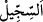
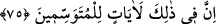
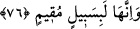

tâbiri, ‘altını üstüne getirme’ tâbirinden daha korkutucu ve dehşet vericidir.
Bu tersyüz etme tamamlanmamışken, onun yanı sıra bir de “Üzerlerine balçıktan
pişirilmiş taşlar yağdırdık.” Bu taşların her birinin üzerinde isâbet edeceği kişinin adı
yazılı idi. İşte böylece hem yerin dibine batırılmak, hem de üzerlerine taş yağdırılmak
sûretiyle helâk edildiler.
el-Kâmûs’ta der ki: “
es-Siccîl, kesek tarzında bir tür taşa denir. Farsça ‘seng-i
kil’ ifâdesinin Arapçalaşmış hâlidir. Ya da bâzılarına göre cehennem ateşinde çamur ile
pişirilmiş taşlardır ki üzerlerinde isâbet edecekleri kimselerin isimleri yazılmıştır. Ya
da ‘siccîl’ burada sicil demektir. Onların adı geçen taş ile azâb olunacakların yazılı
olduğu sicilden demektir. Allah Teâlâ: “Siccîn’in ne olduğunu nereden bileceksin? O
yazılmış bir kitaptır.” (el-Mutaffifîn, 83/8-9) buyurmuştur. Siccîl, buradaki ‘siccîn’
anlamındadır. Ezherî şöyle der: Bu îzâh, bence önceki görüşlerden daha güzel ve daha
açıktır.”
el-Kevâşî’de de şöyle der: O kavme mensup olup da orada bulunmayanların
üzerlerine ise taş yağdırdık.
75. İşte bunda ibret alanlar için işaretler vardır.
“İşte bunda”; Lût kavminin İbrâhim (a.s.)’ın misâfirlerine (meleklere) tamah edip
saldırmak isteyişlerinde, kentlerinin üzerlerine tersyüz edilmesinde ve hem oradakilerin
hem de orada bulunmayanların üzerlerine taşlaşmış çamur yağdırılmasında, bir şeyin
hakîkatini ve iç yüzünü taşıdığı alâmetten çıkarabilmek için, her şeyi bütün boyutlarıyla
düşünenler, “ibret alanlar” ferâset sâhibi olanlar “için” hakkın hak olduğunu
anlayabilecekleri “işâretler vardır.”
76. Onlar hâlâ gözler önünde duran bir yol üzerindedirler.
“Onlar” o üstü altına getirilen şehirler “hâlâ gözler önünde duran bir yol
üzerindedirler.” yâni insanların gelip geçtiği ve mezkûr kentlerin izlerini hâlâ
görebildiği Mekke ile Şam (Sûriye) arasındaki yol üzerinde hâlâ yok olmamış vaziyette
durmaktadır. Öyleyse ey Kureyşliler, Şam’a gittiğinizde onların güzergâhınız üzerinde
bulunan kalıntılarından öğüt alın.